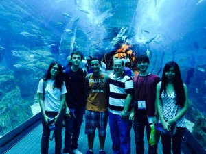

Acabou
Posted in Início on dezembro 20th, 2013 by Letícia – Be the first to commentOlá!
Desde que eu chegue ao Brasil, no último domingo, venho adiando este post. Pode parecer besteira, mas esta é a única coisa que de alguma forma está (estava) inacabada em relação à IJSO 2013. E eu não queria dizer que acabou.
O que eu posso dizer sobre a competição? Foram 10 dias perfeitos! Estar cercada de gente da sua idade, com objetivos e gostos parecidos com os seus, e mesmo assim com culturas distintas é ótimo. Nunca imaginei voltar com amigos de tantos lugares diferentes, e até meio estranhos pra mim, como Eslováquia, Hungria, Argentina, Botsuana, Zimbábue, Bolívia, Índia, etc.
Para eu não me perder, acho que vou começar de novo, e contar sobre a viagem desde o começo. Aqui vai.
Após 3 dias de treinamento, nos quais pudemos treinar para a experimental, conhecer os companheiros e amigos do time, e até sair no G1, fomos finalmente ao aeroporto. Aí foi a hora de pegarmos as malas, nos despedirmos de todo mundo, e tirar a primeira foto do time a caminho da Índia.

Confesso que estava extremamente nervosa, já que era meu primeiro voo internacional, mas 14 horas dentro de um avião fazem você esquecer qualquer tipo de nervosismo que um dia possa ter aparecido. E, finalmente, depois de todo esse tempo sem fazer nada, chegamos a Dubai.
Daí pegamos mais um voo, mais curto, pra Mumbai. Foi lá que conversamos pela primeira vez com outro time, o da Argentina. Como eram 7h de escala, deu bastante tempo para conhecê-los, um povo muito legal por sinal.
Chegando a Pune, cidade em que seria realizada a competição, conhecemos nossa guia, Janhavi. Ela é, com certeza, uma das pessoas da qual vou sentir mais falta, pois era ótima conosco e até dava certos privilégios ao nosso time (como acordar mais tarde do que os outros).
Uma das coisas que mais me impressionou na chegada a Índia, e em todas as vezes que saíamos, era o trânsito. É uma confusão gigantesca, em que os carros tem uma imensa liberdade (sério, mais de uma vez nosso ônibus fez curvas de 180º), e os pedestres atravessam no meio daquilo tudo, e eu com um misto de fascinação e medo da situação. Mesmo ficando mais de 10 dias lá, não me acostumei com isso.
E então fomos ao hotel oficial, onde todos os competidores estariam. Para nossa surpresa, eram quartos com 3 pessoas, e a Marina e eu ficamos em um com uma boliviana. É certo que ela passou quase todos os dias com as outras bolivianas, mas mesmo assim foi bem interessante.
Mais tarde, no jantar, além de tentar comer comida ruim (nunca senti tanta falta de arroz e feijão brasileiros), eu fui passando em várias mesas para conhecer os outros participantes, mesmo que alguns me olhassem de uma forma estranha e pouco convidativa. Acho que foi ali que conheci boa parte dos meus amigos da competição.
E quase sem perceber, chegaram os dias das provas. Conferimos respostas milhares de vezes, fizemos previsões de notas e medalhas, procuramos descobrir como os taiwaneses e russos tinham ido, tudo isso sobre as provas mais difíceis da IJSO desde que ela começou, segundo os professores. A ansiedade dos resultados não parava de crescer.
Mas para nos fazer esquecer um pouco disso, sempre haviam os passeios e as festas com o pessoal. Confesso que nunca vi gente mais animada do que o time do Zimbábue, que, pra deixar mais divertido, estava no nosso andar do hotel. Pela organização, visitamos lugares muito bonitos e com muita história, ou com muito futuro. No penúltimo dia, também arrumaram um “campeonato” de futebol, com times mistos, e meu time foi campeão! Tudo bem que foi só um jogo, e as quenianas eram as melhores do time, mas foi muito divertido.
Por nós mesmos, fizemos noodle parties, rodas de máfia e uma guerra de travesseiros gigante, com a maior parte dos participantes. Também tivemos uma noite cheia de musica e dança típicas indianas, onde pudemos fazer vasos de cerâmica, pintar as mãos com henna e, claro, comprar algumas lembrancinhas.
 (Todo mundo das Américas)
(Todo mundo das Américas)
 (O time todo com a Janhavi)
(O time todo com a Janhavi)
Porém, sem que percebêssemos, a premiação tinha chegado. Entre as apresentações e discursos que mal ouvíamos, esperando que anunciassem logo as medalhas, a hora parecia não passar. Nossos líderes apenas nos diziam que tinha sido um time homogêneo, então realmente torcíamos para que não fosse chamado Brasil logo no começo dos bronzes.
Não foi. Faltando uma rodada de bronzes, estávamos mais tranquilos, até que chamaram o primeiro brasileiro. No meio das pratas chamaram os outros. O incrível é que, em uma das rodadas, chamaram 3 brasileiros, o Matheus, o Lucca e eu. A Marina foi a última a ser chamada, e acabou como a melhor menina da competição, ganhando até matéria na primeira página no G1.
 (o time todo, já com as medalhas)
(o time todo, já com as medalhas)
Depois disso, fomos a Dubai como comemoração. Não todos, pois o Lucca tinha seletiva da IPhO, e voltou pra fortaleza logo após a premiação. A partir daí foram só passeios, visitamos lugares lindos, andamos de barco e à camelo, fomos ao deserto, e comemos comidas que, pela primeira vez em todos os dias, estavam gostosas.
(no aquário de Dubai)
Logo, estávamos de volta ao aeroporto, desta vez indo pra São Paulo, já com saudades dos dias que tinham acabado de passar. Várias horas mais tarde, tivemos uma recepção bem animada em Guarulhos, com direito a gritos e faixas de parentes e amigos.
Só posso dizer que esses foram dias inesquecíveis, e com certeza me animaram a treinar pra mais internacionais. Claro, a medalha também é ótima, apesar de eu achar o certificado mais bonito, porém as pessoas que conheci, as histórias e o próprio fato de eu estar participando, são as coisas das quais mais me lembrarei e vou sentir falta.
Este provavelmente foi o post mais longo que já fiz, então vou parar por aqui.
Ah, só pra não esquecer, fui medalha de prata na OBF e destaque feminino do 1º ano do EM. 
Até mais!


{kind=link}